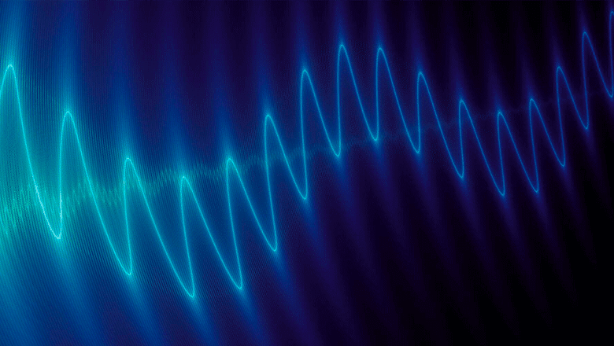

Дерево статей
Аудиомодификации для Android-смартфонов
Предыдущая статья была посвящена теме качества мобильного звука в Android смартфонах. Углубляясь в эту тему мы подробно рассмотрим что из себя представляют аудиомодификации, требования для их установки, принципы работы magisk модуля и способы улучшения качества звука на примере "NLSound". После установки модификации проведём анализ работы устройства и качества звука.
Аудиомодификации для Android-смартфонов

Как только речь заходит о качественном портативном аудио, на ум сразу приходят Hi-Fi аудиоплееры. Надпись "Hi-Fi" на звуковоспроизводящей аппаратуре означает, что она соответствует одному из данных стандартов: DIN 45500 или IEC 60581, т.е. такое устройство может воспроизводить аудио с высокой точностью. Но лишь немногие обращают внимание на то, что их смартфоны тоже умеют воспроизводить аудио в Hi-Fi качестве.